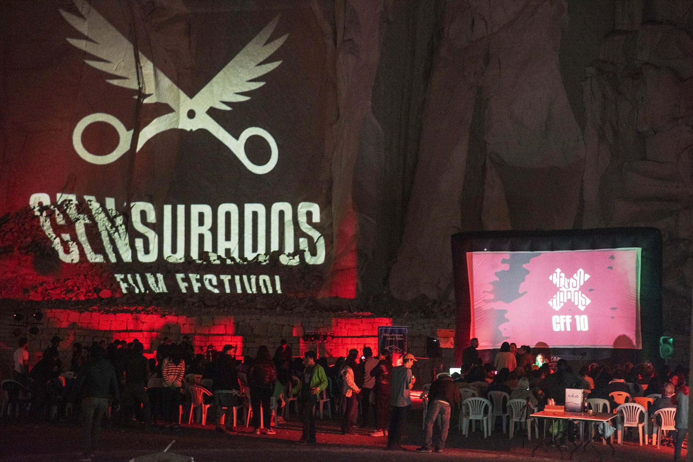
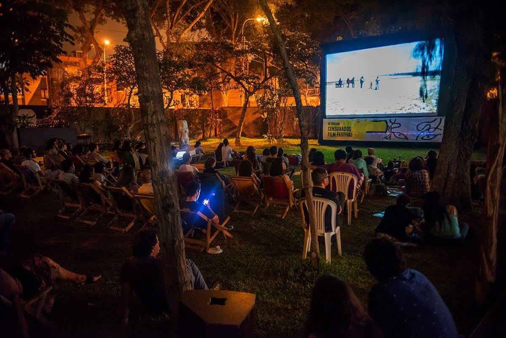
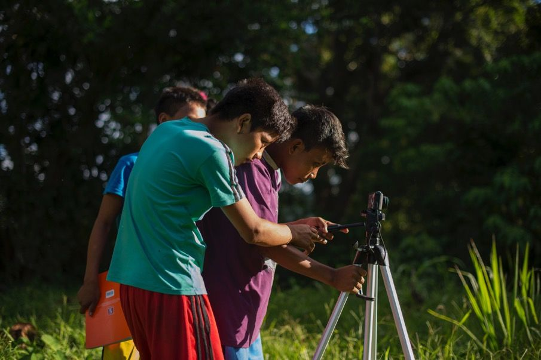

Lo que no quieren que veas
Una ventana para el arte audiovisual desde y hacia la libertad
Somos un espacio de cine por la libertad de expresión que, desde 2014, abre una pantalla a las películas que alguien no quiso que viéramos —censuradas, prohibidas o silenciadas— y a las personas que las crean. Verlas en el festival es un acto de libertad.
Envía tu película
“Lo difícil es defender la libertad de expresión de aquellos que no piensan como nosotros.”
Explora Censurados
 Conócenos
Quiénes somos, qué defendemos y quién lo hace posible.
Conócenos
Quiénes somos, qué defendemos y quién lo hace posible.
 El festival
Once ediciones de cine, formación, diálogos, arte y Festivales que Inspiran.
El festival
Once ediciones de cine, formación, diálogos, arte y Festivales que Inspiran.

Off festival Lo que censuran, lo liberamos: muestras, Las Tratan, talleres y presencia en festivales de otros países. Observatorio
El Archivo vivo: películas censuradas, investigadas y puestas de nuevo a circular.
Observatorio
El Archivo vivo: películas censuradas, investigadas y puestas de nuevo a circular.

Convocatoria ¿Tu película ha sido censurada? La convocatoria está abierta todo el año. Únete
Colabora, difunde, firma o apoya el proyecto.
Únete
Colabora, difunde, firma o apoya el proyecto.
Nuevo
Observatorio de cine censurado
Observa, defiende y da a conocer los casos de censura, amenazas y presiones en el cine y el audiovisual.
Su primer paso es el Archivo vivo: las películas censuradas que han pasado por Censurados desde 2014, cada una con su caso, para conocerlas y compartirlas.
Entra en el ObservatorioArchivo vivo de cine censurado
64 películas que alguien no quiso que viéramos.
- 64 películas
- 11 ediciones
- 39 países
Ouvidor This Jungo Life El filo de las tijeras She Is in Jail Re vuelta Touch of Autism El decreto La Habana de Fito Transformation Vicenta B Las y los Minúscules Eternal Spring Don’t Worry About India Judges Under Pressure Corazón azul Anthem for Kashmir El fuego escondido Hojas de K Sin Voz(s) The First 54 Years: An Abbreviated Manual for Military Occupation Paren de matarnos Myanmar Diaries Chili Powder and Thinner Ask No Questions Mara Un viaje hacia nosotros Madrid Destino Cultura Turismo y Negocio S.A. Beijing Spring El muro. La herida del Sáhara Entre el hierro y el mar Fuera Porta: un grito de lucha José Lo que nos queda Nosotros no olvidamos Sueños al pairo Anote’s Ark Rafiki Of Fathers and Sons The Crying of Tambur Gaza Su nombre es Fujimori Tigernut, la patria de las mujeres íntegras The Occupation of the American Mind Ya no basta con marchar Estados clandestinos Behemoth Soy el número 16 Ayotzinapa. Crónica de un crimen de Estado Yes, We Fuck They Will Have to Kill Us First Ai Weiwei: The Fake Case Seré asesinado 2014: Nacido en Gaza Fire in the Blood Betón (Hormigón) Ciutat morta Cennetin Düşüşü (La caída del cielo) Borrando a papá The Act of Killing Danzantes de tijeras Prohibido Operación Diablo Newen Mapuche Free China
Cada una con su caso: quién la censuró, cómo y por qué. Búscalas, léelas y compártelas. Si alguien no quiere que las veamos, algo tendrán que decir.


Premios Tijera
Nuestro galardón contra la censura: unas tijeras con alas, talladas a mano en madera de palo sangre y capirona.
Desde 2021 premian a la mejor película censurada, a la mejor película internacional y a la mejor película peruana, entre otras categorías. Cada trofeo es una pieza única.
Organizan


Han colaborado: Movies That Matter, Ministerio de Cultura del Perú, Centro Cultural de España en Lima – AECID, Programa Ibermedia, AC/E Acción Cultural Española, Amnistía Internacional, Save the Children, Iber-Rutas, Oxfam Perú, LUM, Freemuse, Movimiento Manuela Ramos y Artists at Risk Connection, entre otros.